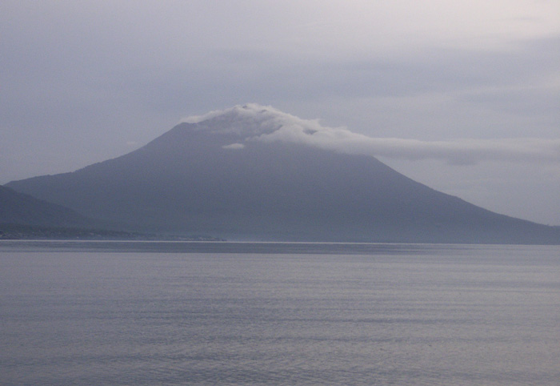
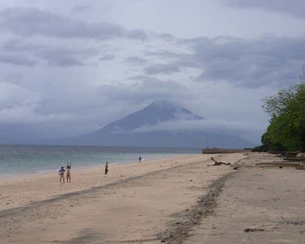
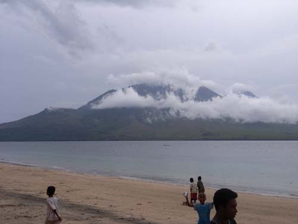
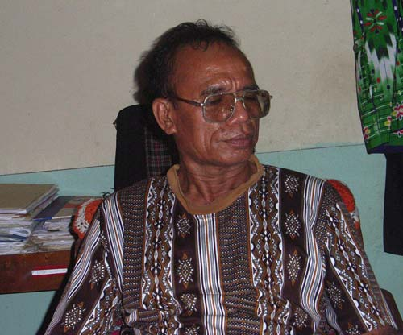
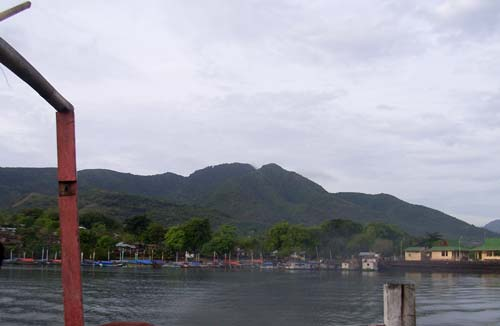

Indonesia Trav-E-Logs ©
Solor
|  | |
| back: Larantuka | Morning view of Ile Boleng from Solor |
================================= A Narrow strait separates Flores from the islands of Adonara and Solor. The Island of Solor is the smallest of the three major islands forming the Solor Archipelago. =================================
January, 2007
|
Took an uneventful trip in a small wooden boat from Larantuka to Lahayong on Solor. In smaller places like these, the traveler must often wade to shore, as funds do not exist to build and maintain expensive piers. After reaching shore, the first thing to do is find a place to set the pack down, wipe the sand off your feet, and put socks and shoes back on. Up on the main road, decided to check out the traditional homes on a motorbike, traveling from the center of the island to the far end (Rita-Ebang), then almost back to the other end. Again the heavens reminded me it is the rainy season. Few homes with bamboo panels were seen, and they were all duplicates, so not many photos to show. In Rita Ebang the rain subsided, so my driver, Yohan insisted on taking me to the beach, where all tourists go. Yes it is a beautiful sandy beach with exquisite views of Flores above emerald green waters, even in the rainy season. This is also where all the kids from village congregate, so needless to say, snapping a few pictures without 40 hands obscuring the view was quite a challenge. In spite of the rain, the ride was pleasant, climbing hills, going around valleys, and occasionally hugging the coastline. We stop briefly at his home, which is in one of the many small agriculture villages between two tiny towns. I wonder how Yohan can afford the motorbike when compared to his house, where he lives with his mother, father, and wife. Everything is constructed from simple grasses, leaves, and bamboo. The floors are dirt, but dry, even though mud surrounds the house. The outhouse is ten feet away. He says he is saving money to build a new home, and a weathered foundation is located in front. New crops are planted within the walls of the foundation, so construction of the sub-floor will not commence soon. The guidebook reads that no tourist facilities are found on the island, but Yohan says his sister, Nika and brother-in-law, Josep have a spare room in the village of Menanga, and I must stay there. This would work out nicely, as close by is the port from where small boats travel to Waiwerang on Adonara, my next destination. He insists "no problem", but when was the last time your brother showed up and expected you to put up a foreigner over night? It's almost dark when we get to Nika and Josep's place, and the last boat to Adonara has long gone. Fortunately, family is important in Nusa Tenggara, and everyone extends a warm welcome. The house is in town, and not only has electricity in the evenings, but a real spare room. Josep B. Kein used to teach school, but now is a school administrator. Together with Nika they run a small shop, selling school supplies along with some food items. A tasty meal is served with the family soon after Yohan departs for home. In the morning, Josep takes me down to the port. He refuses any payment for food or lodging, so I make a donation towards Yohan's home construction project. |
    Photos from top right: Ile Mandiri on Flores from Rita Ebang beach; Southeastern Flores from same beach; Josep B. Kein, my host on Solor; Solor fades in the distance, but not my memories. |
Enjoy!
Bill
------------------------------
Email me at: "juno.com" preceded by an "@" and "dancer2SEAsia"
"The backpacker discovers people are beautiful everywhere. It's the Governments that are evil."
| next: Adonara |
| back: Larantuka |